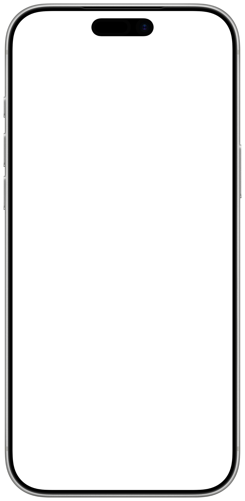
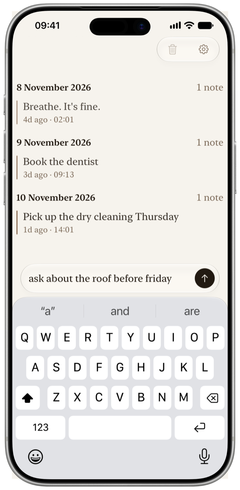
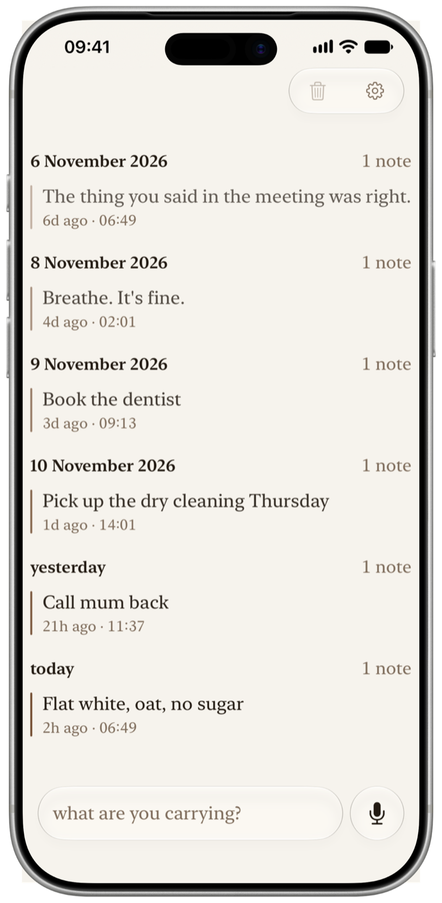
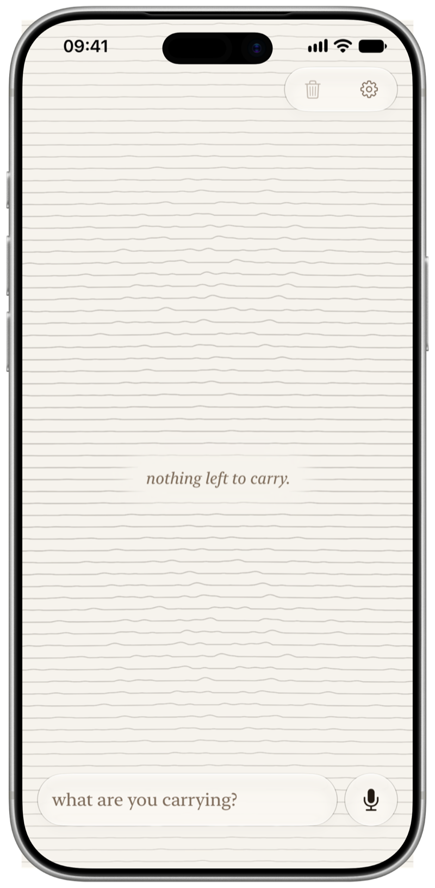
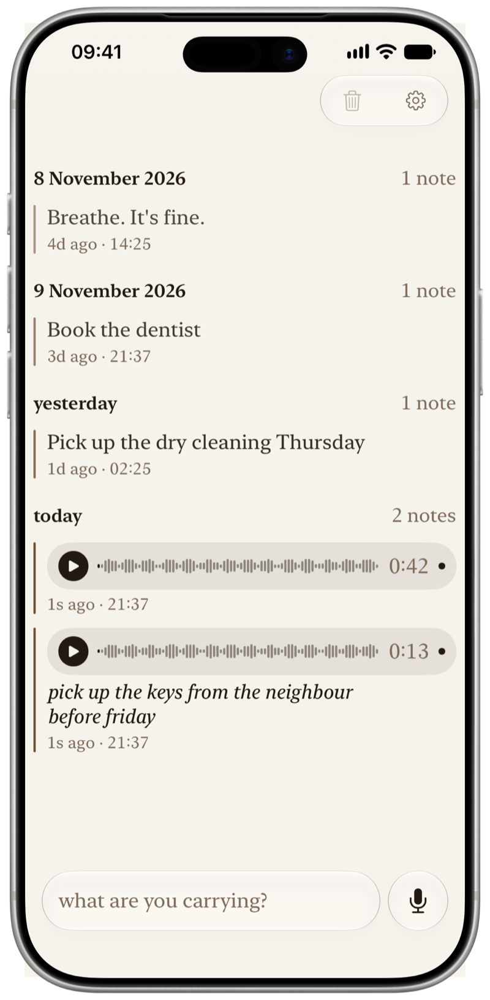
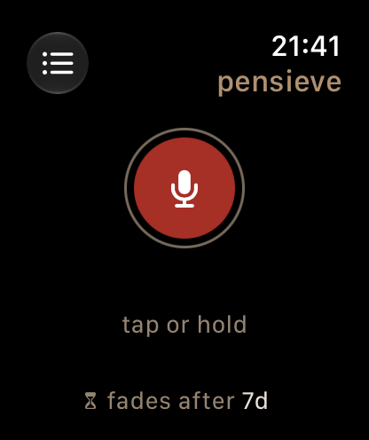

a week,
then gone.
pensieve, a journaling app where notes fade and disappear.
notes fade on their own. nothing to file, nothing to tidy up later.
free · no account · no analytics

how pensieve works
write
type what you’re carrying, or say it. no title, no tag, no category.

fade
your note goes lighter as the days pass. by default it’s gone in a week.

release
gone. you don’t file it or delete it. it just goes.

watch one go.
type a thought and leave it. it fades over about twenty seconds here. in the app you’d have a week.
nothing you type here leaves your browser: not stored, not sent, no third parties.
built to forget.
you keep what you meant to keep. the rest goes on its own, and mostly you won’t miss it.
pin it,
or extend it.
need one a bit longer, hold on to it. the rest goes sooner than you’d like. that’s the point, and it’s also the cost.
no archive,
no search.
nowhere to scroll back to. you go looking for something once, and then you stop looking.
no account,
no tracking.
no sign-up, no ads, no analytics. your notes never touch a server of ours. we don’t have any.
say it instead.
hold the mic and talk. the note keeps your voice and the words, written out on your phone in english or czech. it fades like any other note, the recording with it.

from the Action Button.
set the Action Button to pensieve’s “record a voice note” and press it, with the app closed. the take shows in the Dynamic Island while you talk. press again and it’s kept. Siri and Shortcuts can start one too.
on your wrist.
the Apple Watch app records a note from your wrist or its complication and sends it to your phone. turn the Digital Crown to choose how long it stays.

private by design.
your notes live on your device. lock pensieve with Face ID if you want to. turn on iCloud sync and they travel through your own private iCloud, never through us.
free. an optional supporter purchase unlocks never, notes that stay.
read the privacy policy →questions
a week by default. you can change that in Settings, or extend a single note from its menu. pin a note and it won’t fade until you unpin it.
no. when a note fades on its own it’s gone for good, that’s the whole point. notes you delete by hand sit in Trash for 30 days first, in case you change your mind.
pensieve is free, with no ads and nothing to sign up for. an optional supporter purchase unlocks never: a note released that way stays until you delete it, rather than being paused the way a pin is.
pinning is free, and it’s a pause rather than a decision: a pinned note stops fading until you unpin it, and unpinning restarts its full window. use it for things you need a bit longer but not forever.
no. a note stays what you wrote when you wrote it. you can copy it, extend it, pin it, or delete it.
english and czech. pensieve writes out what you said on your iPhone, trying english first, then czech. other languages are still recorded, but the words written out for them come out wrong.
yes. turn on Face ID in Settings and pensieve asks for Face ID or your passcode before it opens. the lock is off by default.
only if you ask it to. iCloud sync is off by default. turn it on and your notes sync across your own Apple devices through your private iCloud, never through a server of ours.
pensieve is for iPhone, with a companion app for Apple Watch that records notes from your wrist. there is no iPad or Mac app.
iOS 27 or later.
a week is usually enough. or rather it isn’t, and you pin the one that matters.